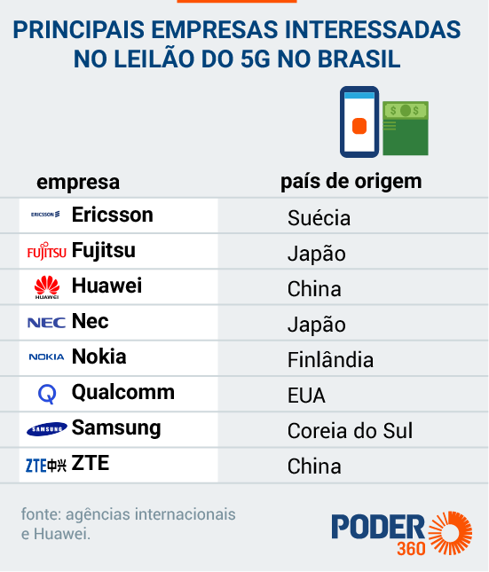

A tecnologia 5G
Introdução
A tecnologia 5G é o nome dado à próxima geração de tecnologia de Internet móvel, a qual já vem sendo implementada em lugares ao redor do mundo e promete melhorias significativas em relação a tecnologia anterior: o 4G.
Nesse texto será elucidado sobre do que se trata a tecnologia 5G, sobre suas vantagens em comparação à tecnologia anterior, sobre os impactos e vantagens que essa tecnologia trará à nossa sociedade e sobre a chegada da tecnologia no Brasil.
O que é a tecnologia 5G?
O 5G, representa a quinta geração das tecnologias de redes móveis e banda larga. Seu objetivo é superar de maneira bastante significativa os números da tecnologia atual, o 4G, em aspectos como a velocidade de conexão, o número de usuários simultâneos ou a cobertura mais ampla e eficiente.
Para se ter noção, uma simples comparação entre a tecnologia 4G e a 5G, nos mostra que em média no Brasil, as redes da quarta geração tem a velocidade de 33 MB/s, já a velocidade estimada a qual a nova tecnologia pode chegar é de até 10GB/s.
As vantagens da rede 5G.
Mas as vantagens da rede 5G não param na velocidade superior em relação à tecnologia anterior. As redes 5G terão um consumo de energia até 90% menor do que a rede 4G. Além disso tudo, o número de aparelhos conectados por área deve ser 5 vezes maior, dado que representa uma diminuição de gastos em infraestrutura o que acaba por baratear a implementação da rede e consequentemente no preço final para o consumidor. Por conta dessa característica também, haverá aumentos drásticos na duração da bateria dos radios receptores.
Sendo assim, após a instalação da infraestrutura necessária para a implementação da rede 5G, haverá a diminuição de custos futuros, por conta da redução do consumo de energia. O tempo de conexão entre aparelhos deve ser inferior a 5 milissegundos, em comparação, a latência da rede 4G é de 30 ms. Esse tempo de latência reduzido, por exemplo, terá grande impacto na implementação de carros autônomos, pois essa tecnologia possibilita a comunicação entre esses carros, otimizando assim sua autonomia e o sistema o qual evita o choque entre esses carros.
O aumento da capacidade do número de aparelhos conectados na rede, também representa uma enorme ampliação na tendência mundial da “Internet das Coisas”, o IoT (Internet of Things). Resumidamente o IoT é um termo usado para se referir à interconexão digital entre objetos cotidianos, tais como eletrodomésticos, gadgets pessoais, como smartwatches, e até mesmo itens da construção civil, como lâmpadas ou termostatos. Sendo assim, a implementação da rede 5G não terá impactos somente no IoT privado, mas também nas áreas públicas estatais.

O 5G no Brasil.
O leilão da tecnologia 5G no Brasil devia ter ocorrido no primeiro semestre de 2020, mas por conta da pandemia da Covid-19, foi adiado e deve ocorrer no primeiro semestre de 2018.
A expectativa dos especialistas é que a oferta brasileira, seja a maior do mundo. Sendo assim a oferta atrai investidores do mundo todo, empresas tais como a Ericsson (Suécia), Fujitsu (Japão), Huawei (China), Nec (Japão), Nokia (Finlândia), Qualcomm (Eua), Samsung (Coreia do Sul) e a ZTE (China). Segundo a Anatel, a Agência Nacional de Telecomunicações, a previsão é de que a implementação da cobertura 5G seja feita gradualmente, chegando em 10% em 2023, chegando ao alcance de 100% na data da finalização prevista: 2028.
